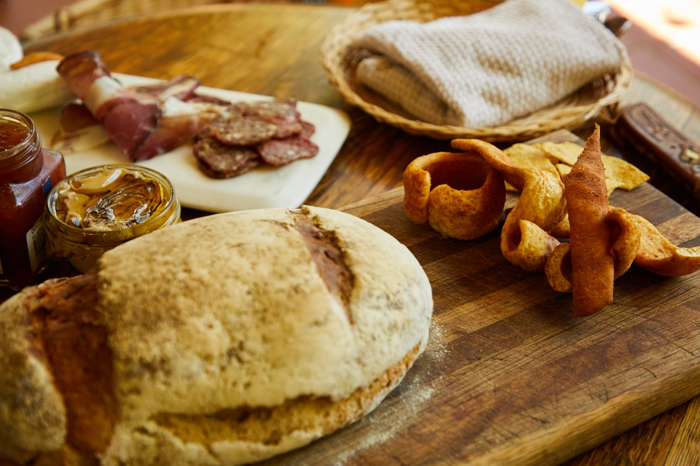
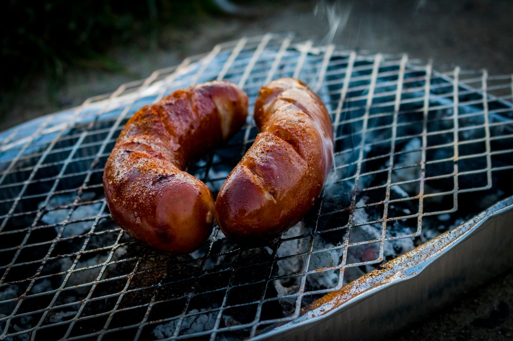
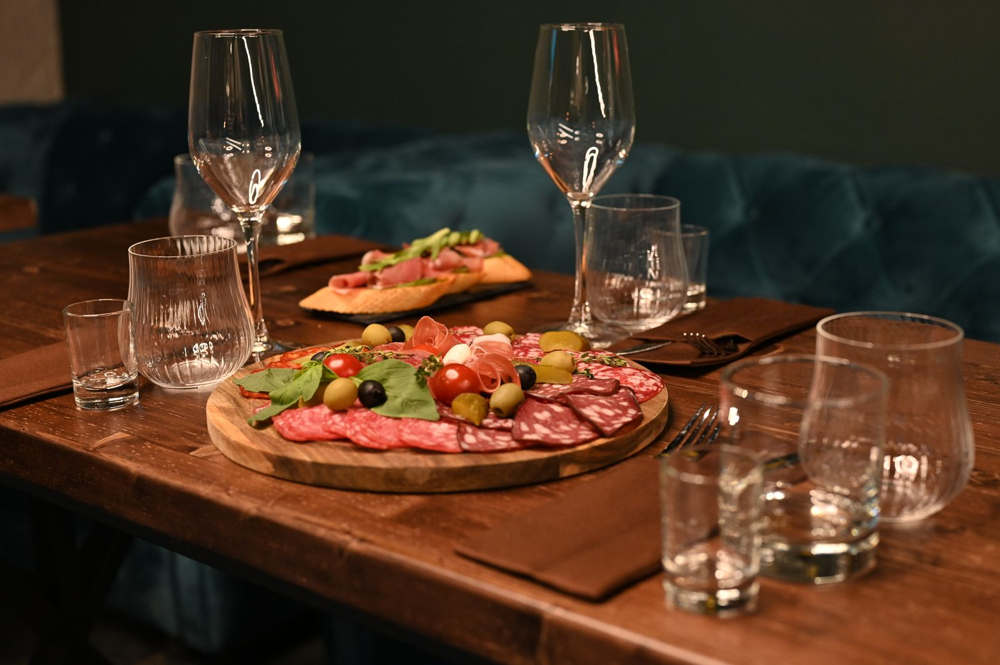
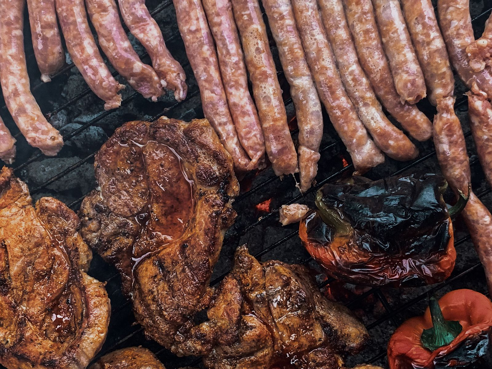

Papas de sarrabulho
Um dos pratos mais falados pelos clientes.
Taberna de petiscos perto da ponte de São Gonçalo, em Amarante
Na Rua 31 de Janeiro, a dois passos da ponte de São Gonçalo. Papas de sarrabulho, caldo verde, prego com queijo da Serra e petiscos para partilhar, com o vinho verde da casa e 4,4 estrelas no Google. Reserve a sua mesa.

A casa
Petiscos e pratos do Norte, perto da ponte.
Em 744 avaliações.
A dois passos da ponte de São Gonçalo.
Uma refeição completa sem pesar na carteira.




Fotografias ilustrativas. No site final, usamos as fotografias da casa.
Rua 31 de Janeiro, 4600-043 Amarante
935 531 920
935 531 920
Ligue para confirmar o horário
| Quarta e quinta | 12:00 – 22:00 |
|---|---|
| Sexta a domingo | 12:00 – 22:30 |
| Terça | 18:00 – 22:00 |
| Segunda | Encerrado |
Faça a encomenda para levantar. Confirmamos pelo WhatsApp.